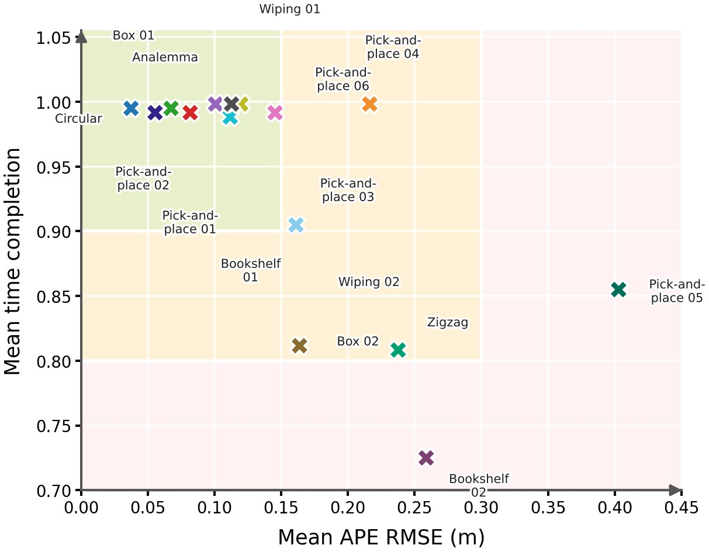
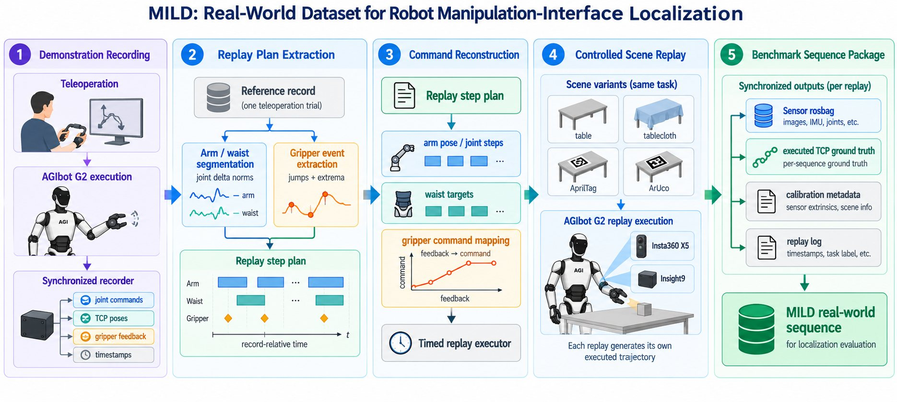

Dataset videos
Task clips across scenes and sensors
Each card shows an approximately 10 s synchronized preview clip. Real-world X5 clips are front/back fisheye pairs, Insight9 clips are left/right grayscale pairs, and MILD-Sim clips include fisheye-stereo and RGB views.
Replay event localization
Task-by-method trajectory replay matrix
Rows are manipulation tasks and columns are localization methods. Each clip shows the estimated trajectory against the recorded TCP reference and zooms in on logged pick/place neighborhoods. A black Fail clip follows a table-cross result from the paper table.
Paper figures
Benchmark and method snapshots
The manuscript also includes trajectory-level comparisons, task difficulty analysis, the AprilVINS data flow, and the real-world collection pipeline.




Release
Anonymous review page
This is an anonymous project-page draft for review. Dataset, paper, and code links will be activated when the release package is finalized.